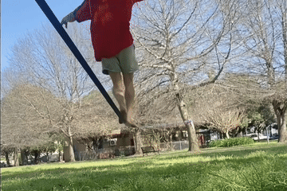

Umm... What-lining???
Slacklining is a sport where we try to balance on a rope. The options are endless; long or short, loose or tight, thick or thin, stretchy or static, high or low!
I've been slacklining for ~4 years. I love the flow and the super-sharp focus, and the way "impossible" things slowly become effortless. It's great! But fair warning, it can be addictive...
Frequently asked questions:
Can I try?
Sure! Actually, it depends...
If I’m wearing airpods, I'm trying to focus. Otherwise, just wait for me to fall off before introducing yourself. I might still say no for safety reasons (small children, drunk people, etc).
I recommend getting a beginner slackline kit (they are quite cheap secondhand, and very easy to use). It is best to start with a low, short, tight setup. Put it in a park or backyard, and enjoy!
How do you do it?
It's magic practice. Everything happens subconsciously, so I don't really know how I do it, either. Our brains can do incredible things.
Are you training for something?
Not really. I don't plan to join the circus or anything. I just do this for fun.
What about the trees?
The trees are fine! We use padding to prevent wear; and thick trees are way, way stronger than slacklines.
Can I join your group?
Of course! Everyone is welcome. There's a small group of us on the Northern Beaches. There's also a bigger group for all of Sydney.
Check out these links:
(We're still a small group, so we just use a facebook group chat. Send me a message request and I'll add you.)